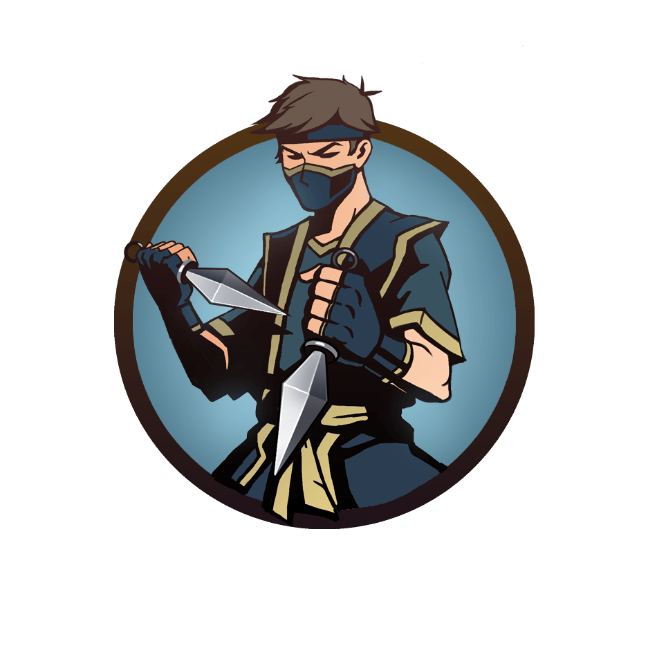
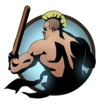
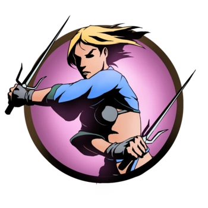
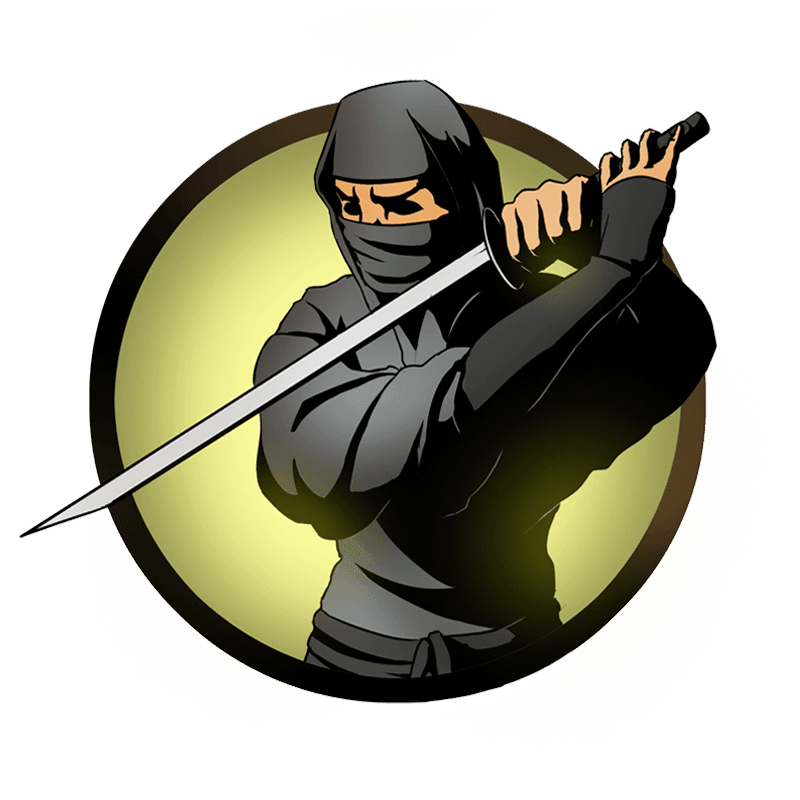
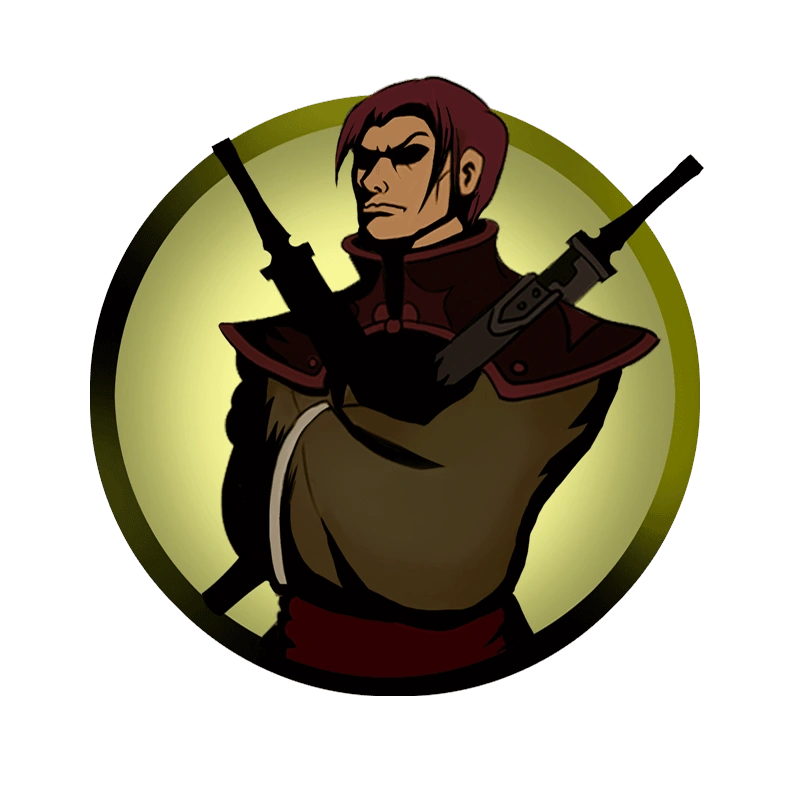

Назад
Рысь — один из шести демонов, хранящий печать от Врат Теней, и первым босс в Shadow Fight 2. Появился вместе в релизом игры — 11 сентября 2013 года. Имеет пять телохранителей, которых необходимо победить перед тем, как игрок сможет сразиться с ним. Рысь является основателем и лидером организации ассасинов, известной как «Орден», в состав которой входят его телохранители. Единственный противник, имеющий зачарование «Часовая бомба» на оружии.
Шин — самый первый телохранитель, с кем встречается игрок. Он является самым слабым членом Ордена ассасинов, из-за чего Рысь и предложил Тени сразиться с ним для проверки в начале игры. Борется недоступными в магазине кинжалами. Единственный телохранитель.

Кирпич — первый телохранитель, с которым Тень сражается по своему желанию.Высокомерен и нагл.
Игла — предана своему Ордену и стремится избавиться от Тени любыми способами. После своего поражения даёт напутствие, которое, тем не менее, не повлияет на исход битвы с Рысью.
Призрак — был одним из тех, кому «удалось одолеть Рысь». Однако, сняв с него маску, он увидел соломенное чучело, после чего почувствовал стальные когти у своей шеи. С тех пор Призрак служит ему «правдой и верой»
Щегол — он не горит желанием разделаться с Тенью. Он далёк от интересов Ордена, в котором он видит «средство разогнать скуку и отточить свои навыки владения мечом». После поражения Тенью ушёл из Ордена: «Как же мне наскучила такая жизнь, Орден… Я вернусь туда, где мне самое место – в высший свет»